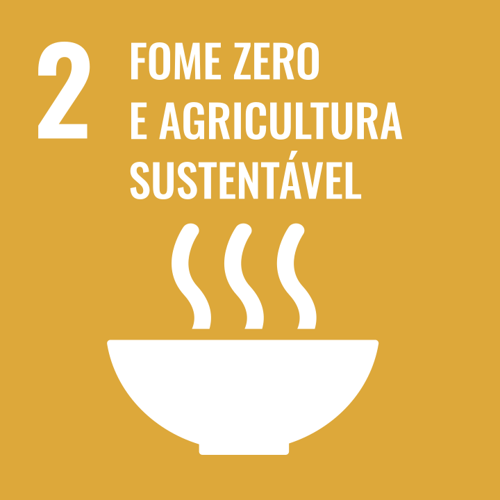
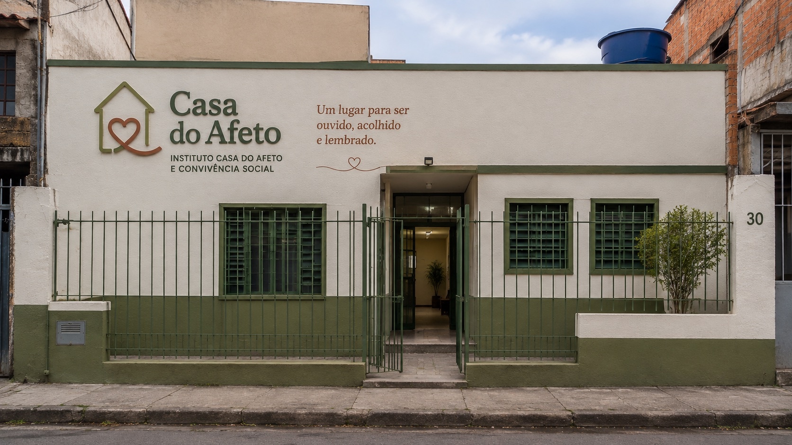
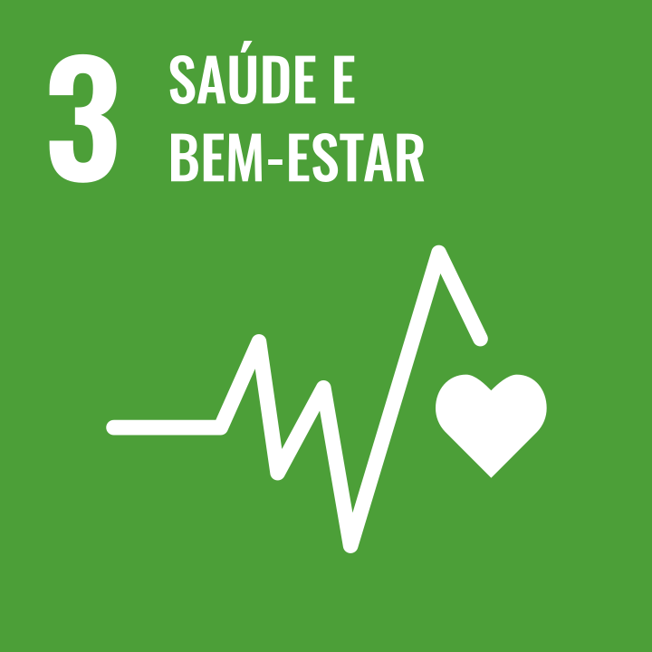
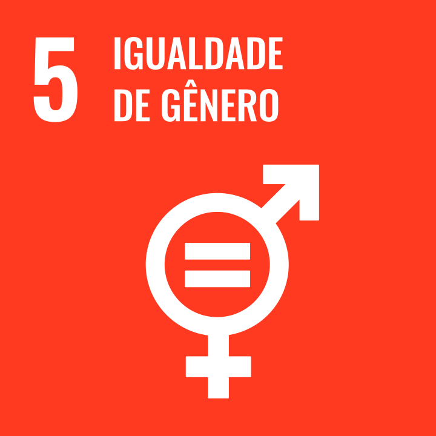
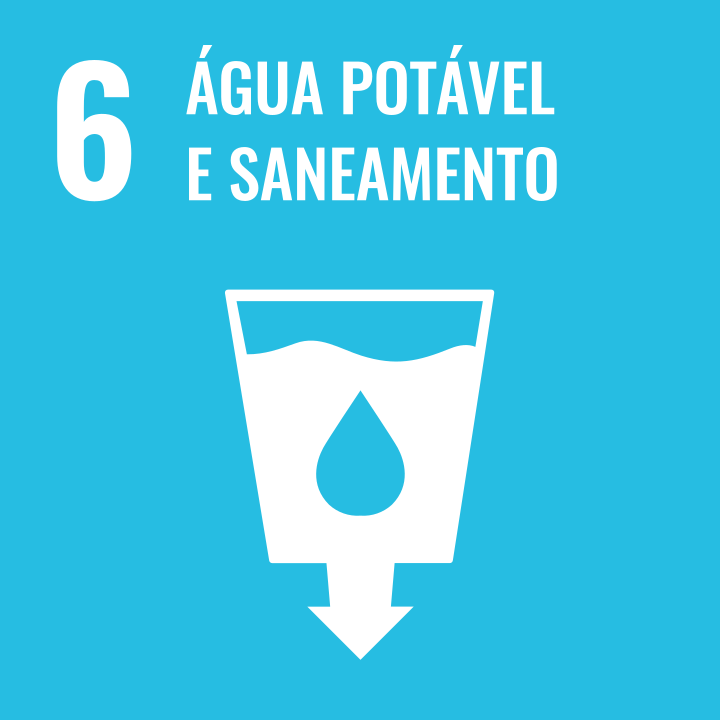
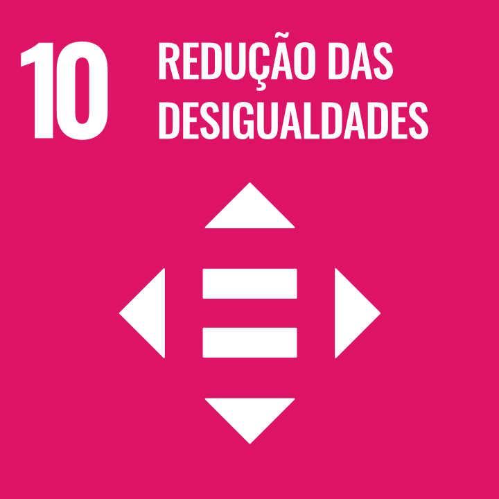
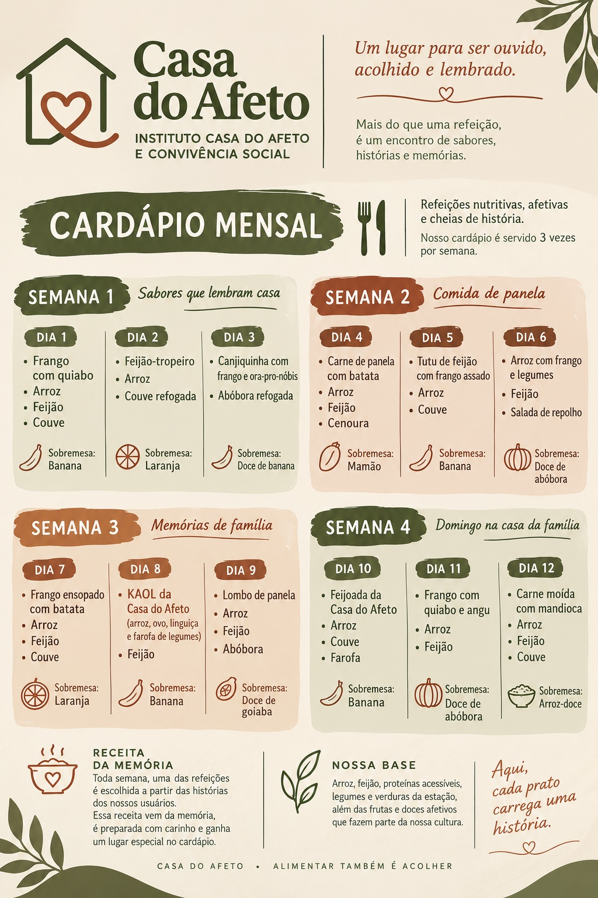
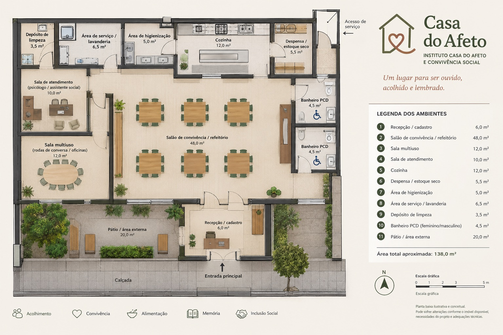

Contribuir para o acesso à alimentação adequada e para o enfrentamento da insegurança alimentar.

role para conhecer o projeto
instituto casa do afeto e convivência social
um lugar para ser ouvido, acolhido e lembrado
Trabalho apresentado por Maria Eduarda, Mariana Rosa, Kesley Klisman e Kevin Santana.
por que existimos
pessoas sem moradia em Belo Horizonte, segundo o CadÚnico.
Fonte: CadÚnico, 2026.em cinco anos: eram 11.858 pessoas.
Fonte: CadÚnico, 2026.vagas no acolhimento temporário da cidade: mais de 13 pessoas para cada vaga.
Fonte: rede de acolhimento de BH, 2026.No Brasil, são 392,4 mil pessoas em situação de rua no CadÚnico (MDS, jun. 2026), e 13,5% da população ainda vive insegurança alimentar moderada ou grave (FAO, 2022 a 2024).
E não falta só comida. Falta acolhimento: ser ouvido, lembrado e tratado com dignidade.
É para esse cenário que a Casa do Afeto vai nascer.
agenda 2030 · ONU
A Casa do Afeto nasce de uma proposta local, mas está conectada a objetivos globais.
A proposta está alinhada aos Objetivos de Desenvolvimento Sustentável (ODS), estabelecidos pela Organização das Nações Unidas como parte da Agenda 2030. Entre os 17 objetivos, cinco possuem relação direta com a atuação proposta pela Casa do Afeto.
deslize para ver os cinco objetivos →

Contribuir para o acesso à alimentação adequada e para o enfrentamento da insegurança alimentar.

Promover bem-estar, acolhimento e melhores condições de vida para pessoas em situação de vulnerabilidade.

Promover respeito, igualdade e combate à discriminação, garantindo um espaço acolhedor para todas as pessoas.

Reconhecer o acesso à água, higiene e saneamento como elementos fundamentais para saúde e dignidade.

Contribuir para a inclusão social, redução das desigualdades e ampliação do acesso a oportunidades e direitos.
Na Casa do Afeto, esses objetivos se encontram em uma mesma proposta: alimentar, acolher, ouvir e promover dignidade.
da agenda global à casa
É nesse contexto que a Casa do Afeto propõe uma solução local para contribuir com desafios que também são globais.
da agenda à prática
Refeições nutritivas, três vezes por semana.
Um espaço seguro, sem julgamento.
Rodas de conversa e atendimento.
Vínculos que nascem à mesa.
Dignidade, direitos e oportunidades.
a ideia
Comida não é só necessidade do corpo. É identidade, família, infância.
Não será um prato pronto. Será espaço para ouvir, e a memória vira receita.

os pilares
O espaço onde cada pessoa vai se sentir segura.
As lembranças por trás de cada receita compartilhada.
O que nasce das refeições e das rodas de conversa.

o que produzir
Refeições nutritivas, construídas a partir das histórias dos participantes.
Cada memória lembrada vira registro no Banco de Receitas e Memórias.
o cardápio
Servido três vezes por semana, com arroz, feijão, proteínas acessíveis, legumes e verduras da estação, além das frutas e doces afetivos da nossa cultura.
Toda semana, uma das refeições é a Receita da Memória, escolhida a partir das histórias de quem frequenta a Casa.

como produzir
Equipe: funcionários, voluntários e estudantes. Ingredientes: compra, doação e parceria.


o espaço
Recepção, salão de convivência e refeitório, cozinha, despensa, sala multiuso para rodas de conversa e sala de atendimento com psicólogo e assistente social.
Banheiros acessíveis, área de higienização, lavanderia e um pátio completam a casa.
para quem produzir
Pessoas em situação de rua e famílias em vulnerabilidade social.
Sem distinção de idade. Acesso espontâneo, com cadastro inicial breve.

quem somos, na prática
Organização Não Governamental: entidade privada, sem fins lucrativos, criada pela sociedade civil — não pelo Estado nem pelo mercado. É o chamado terceiro setor, ao lado do poder público (primeiro setor) e das empresas (segundo setor).
Usar as ferramentas de gestão e inovação do mundo dos negócios para resolver um problema social ou ambiental, medindo o resultado em vidas impactadas, não em lucro. É assim que a Casa do Afeto se organiza: uma ONG que funciona como um negócio de impacto.
a casa em números
de atendimento por semana: segunda, quarta e sexta
pessoas atendidas na simulação
refeições distribuídas em 12 encontros
de casa, com cozinha própria e salas de convivência
de orçamento anual para 2027
por mês para manter tudo funcionando
Dados de simulação: servem de parâmetro para organizar a execução, o acompanhamento e a avaliação das ações.
interdisciplinaridade
Cada disciplina do curso resolve uma parte do projeto. Juntas, tiram a Casa do Afeto do papel com gestão, segurança e afeto.
Planeja, mede e decide: DRE, payback simples e uso eficiente de cada real.
Orçamento anual, custos diretos e indiretos, fichas técnicas e prestação de contas.
Regularização da ONG, RDC 216, Boas Práticas, POPs e regras para equipe e voluntariado.
Redes sociais, campanhas contra o desperdício e mobilização de doadores e voluntários.
Massas, molhos e caldos que rendem, nutrem e aproveitam bem os ingredientes doados.
Pães e doces afetivos, como o bolo de fubá, e oficinas que ensinam um ofício.
Harmonização nos eventos beneficentes de captação. No atendimento, nada de álcool, em respeito ao ODS 3.
administração · DRE
| Descrição | Valor (R$) |
|---|---|
| Receita bruta | 156.000,00 |
| (-) Devoluções | 0,00 |
| (-) Tributos | 0,00 |
| (=) Receita líquida | 156.000,00 |
| (-) CMV | 48.000,00 |
| (=) Lucro bruto | 108.000,00 |
| (-) Despesas operacionais | |
| Despesas administrativas | 37.200,00 |
| Despesas comerciais | 4.800,00 |
| Despesas financeiras | 0,00 |
| (=) Lucro operacional | 66.000,00 |
| (+/-) Receitas e despesas não operacionais | 0,00 |
| (=) LAIR | 66.000,00 |
| (-) Provisão contribuição social / IR | 0,00 |
| (=) Lucro líquido (superávit) | 66.000,00 |
Fonte: autoral (2026).
em que a administração contribui
Em uma ONG, o lucro se chama superávit: não é dividido entre sócios, é reinvestido na própria causa. Os custos da DRE somam R$ 90 mil, o mesmo valor do orçamento de 2027.
administração · payback simples
| Item | Valor (R$) |
|---|---|
| Equipamentos de cozinha industrial (fogão, forno, refrigeração e bancadas) | 22.000,00 |
| Adequação do imóvel e acessibilidade | 11.000,00 |
| Mobiliário do refeitório e das salas | 10.000,00 |
| Utensílios, louças e EPIs | 5.000,00 |
| Tecnologia e comunicação inicial | 4.000,00 |
| Regularização (estatuto, CNPJ, alvará e licença sanitária) | 3.000,00 |
| Total investido | 55.000,00 |
superávit acumulado, mês a mês
meses de operação · superávit de R$ 5.500 por mês (R$ 66.000 ÷ 12)
No terceiro setor, o payback mostra em quanto tempo o superávit repõe o que foi investido para abrir a casa. Depois disso, todo o excedente volta para a causa.
controladoria · orçamento 2027
Só os ingredientes somam R$ 27.600, quase um terço de todo o orçamento (31%). Média mensal necessária: R$ 7.500. Período: janeiro a dezembro de 2027.
controladoria · captação e controle
Meta de captação = 100% do orçamento previsto. Fonte: autoral (2026).
como a controladoria acompanha
legislação
A conformidade jurídica protege quem é atendido, quem trabalha e quem doa.
Associação sem fins lucrativos, com estatuto, CNPJ e regras claras para parcerias com o poder público.
Boas práticas na manipulação de alimentos, com Manual de Boas Práticas, POPs, alvará e licença sanitária.
Autoriza restaurantes, mercados e indústrias a doar excedentes ainda próprios para consumo: menos desperdício, mais comida no prato.
Direitos trabalhistas para quem é contratado e termo de adesão para cada voluntário.
Cadastro dos atendidos protegido e fotos divulgadas só com autorização, preservando a privacidade.
Credibilidade é o maior ativo de uma ONG, e ela começa no cumprimento da lei.
plano de marketing
Tom de voz: dignidade, nunca caridade punitiva. Rostos e histórias só aparecem com autorização.
Um lugar para ser ouvido, acolhido e lembrado. Refeições, escuta e convivência · seg, qua e sex.
Quero apoiaro diferencial
"Qual refeição podemos oferecer?"
"Qual comida faz você lembrar de alguém?"
Quem recebe a refeição vira protagonista da própria história.
agenda 2030 · ONU
Os ODS orientam a proposta da Casa do Afeto e ajudam a transformar nossa intenção em compromissos concretos.
ODS 2 • ODS 3 • ODS 5 • ODS 6 • ODS 10
Conheça os Objetivos de Desenvolvimento Sustentável da ONUa ficha do projeto
encerramento
Porque acolher também começa assim: ouvindo com atenção.
Plano de negócios e inovação da ONG Casa do Afeto
Faculdade Senac de Gastronomia · Tecnologia em Gastronomia · Trabalho Interdisciplinar III
Prof. orientador: Louis Felipe Vieira · Belo Horizonte, 2026